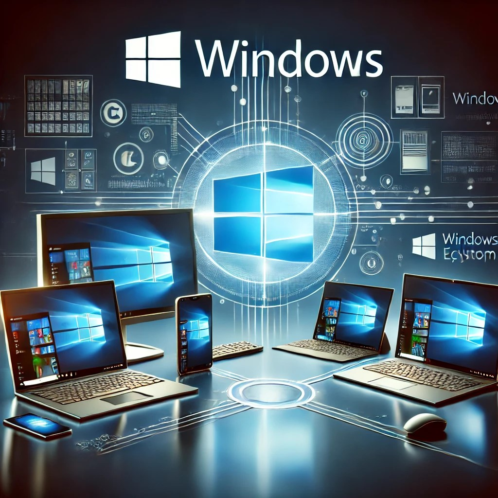
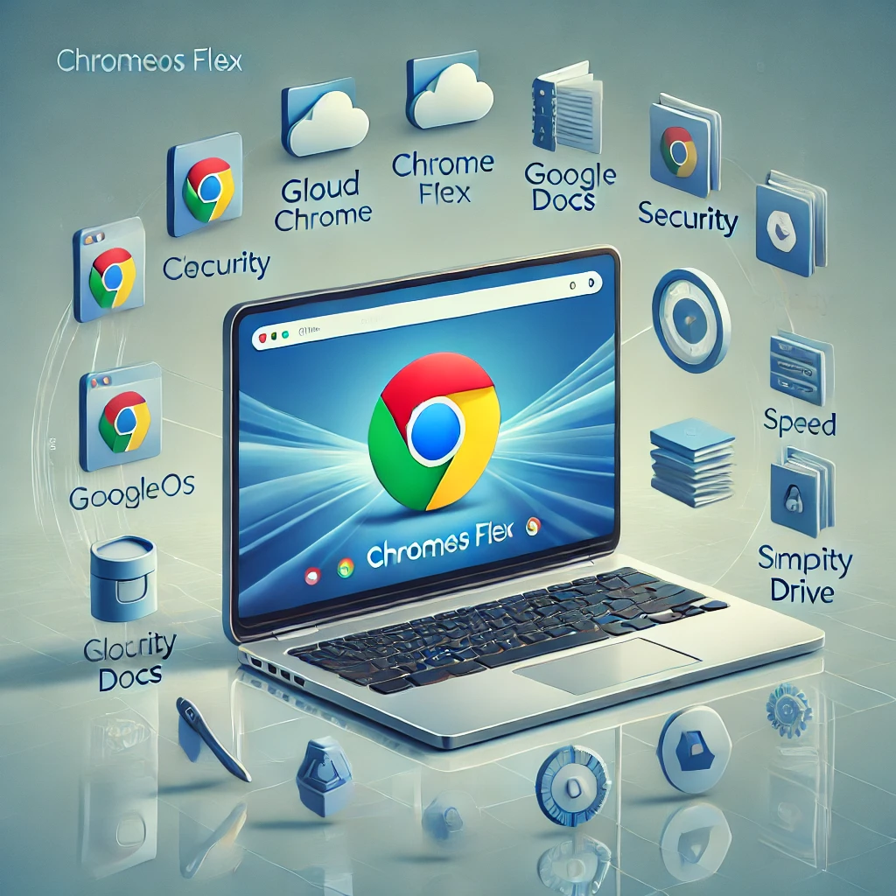
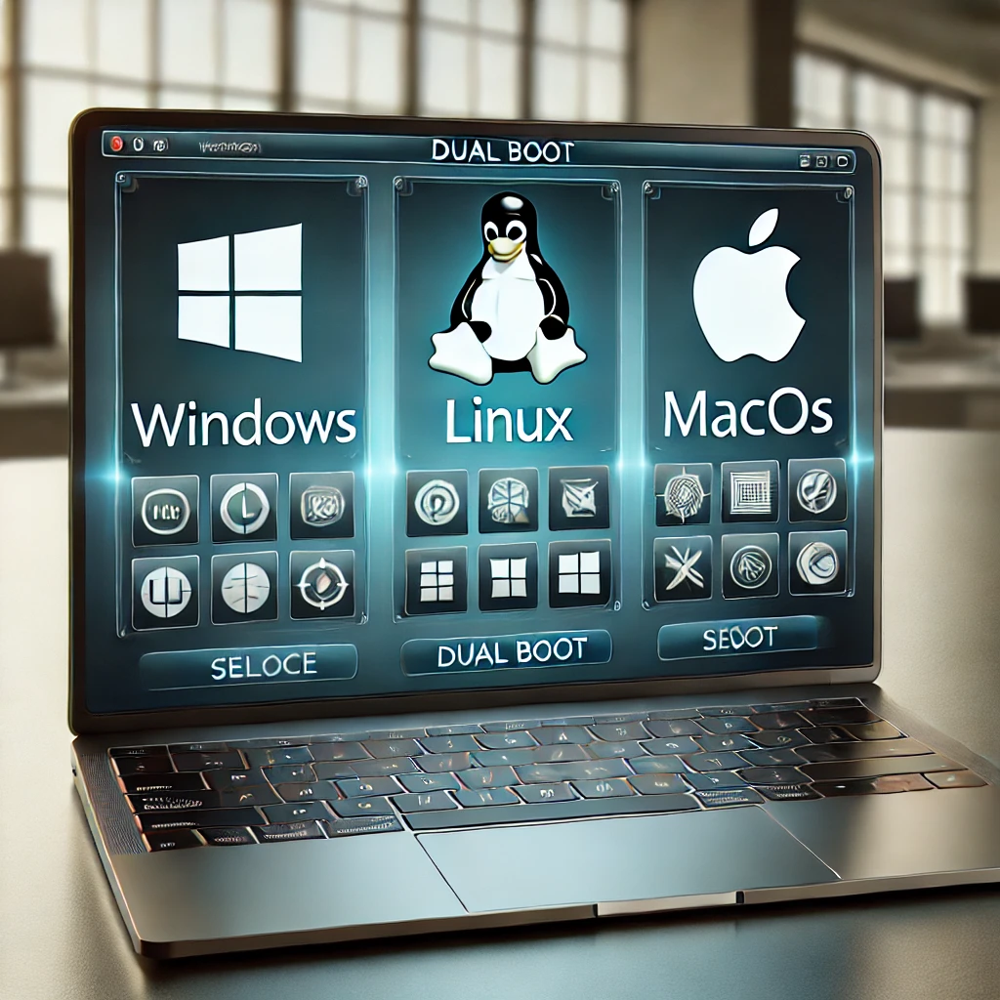

Formatação de Computadores
A formatação de computadores é um processo essencial para restaurar o desempenho da máquina, remover vírus, corrigir erros do sistema e instalar um novo sistema operacional. Se o seu computador está lento, travando ou apresentando problemas, a formatação pode ser a solução ideal para deixá-lo como novo.
- Backup de arquivos
- Formatação completa do disco
- Instalação do sistema operacional
- Instalação e/ou atualização de drivers
- Instalação de softwares essenciais
- Otimização do sistema
Aqui você encontra um serviço de Formatação completo, que inclui:
-
Windows
Realiza-se a instalação de qualquer versão do Windows, desde o Windows 7 ao 11, usando ISO's confiáveis, genuínas e de fontes seguras. Seja qual for a versão, é garantido um serviço rápido, confiável e seguro, para que você tenha um sistema renovado e pronto para uso sem preocupações.
-
Ubuntu, Linux, Mint, Fedora, Debian e outras distribuições Linux
Seja qual for a distribuição Linux que você precisa, aqui pode ser instalada qualquer versão. Seja Ubuntu, Linux Mint, Fedora, Debian ou qualquer outra distribuição, só depende da sua preferência e necessidade. Usando arquivos de instalação seguros e confiáveis, é garantido um serviço eficiente para lhe proporcionar um sistema estável.
-
MacOS
Dejeja instalar uma versão ou mesmo mudar a versão macOS do seu macbook? Não se preocupe, entre em contato com a VandyTechSolutions, que será instalado qualquer versão que você precise, desde:
Versões mais recentes:
- macOS Sequoia
- macOS Sonoma
- macOS Ventura
 macOS Monterey
macOS Monterey- macOS Big Sur
Ou versões mais antigas:
- macOS Catalina
- macOS Mojave
- macOS High Sierra
- macOS El Capitan
- macOS Yosemite
-
ChromeOS Flex
O ChromeOS Flex é um sistema recente, leve e eficiente projetado para rodar em PC's antigos e com pouca capacidade de hardware. Com uma interface simples, tem a finalidade de revitalizá-los e torná-los mais rápidos, seguros e fáceis de gerenciar. Portanto, se você tem um PC limitado, este sistema, certeza que vai ser uma boa opção para melhorar o desempenho e a usabilidade da sua máquina.
-
Dual boot - Dois sistemas na mesma máquina
Você quer testar outro sistema operacional, seja para fins de trabalho, jogos, etc, mas não quer ficar sem o sistema que já tem? Não se preocupe, aqui é feito a instalação de dois sistemas na mesma máquina, permitindo-lhe aproveitar o melhor de dois mundos. Você é quem escolhe.
- Windows + Linux
- Duas versões diferentes do mesmo sistema:
- Windows + Windows
- Linux + Linux
O seu pc é antigo, fraco ou você tem dúvidas sobre o sistema operacional mais adequado? Não se preocupe, será feito a formatação e instalação de qualquer sistema de acordo com a sua necessidade: